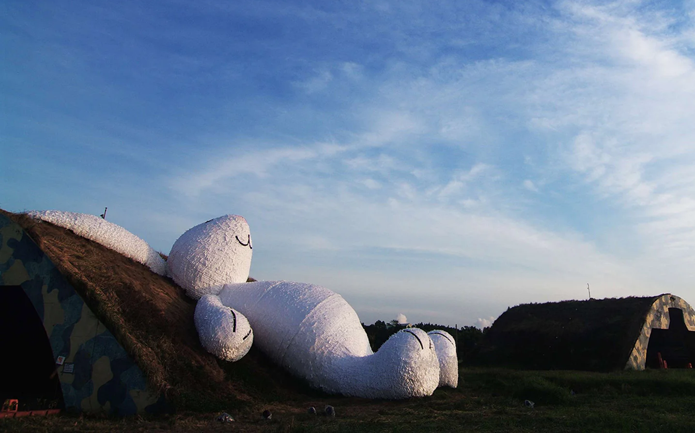
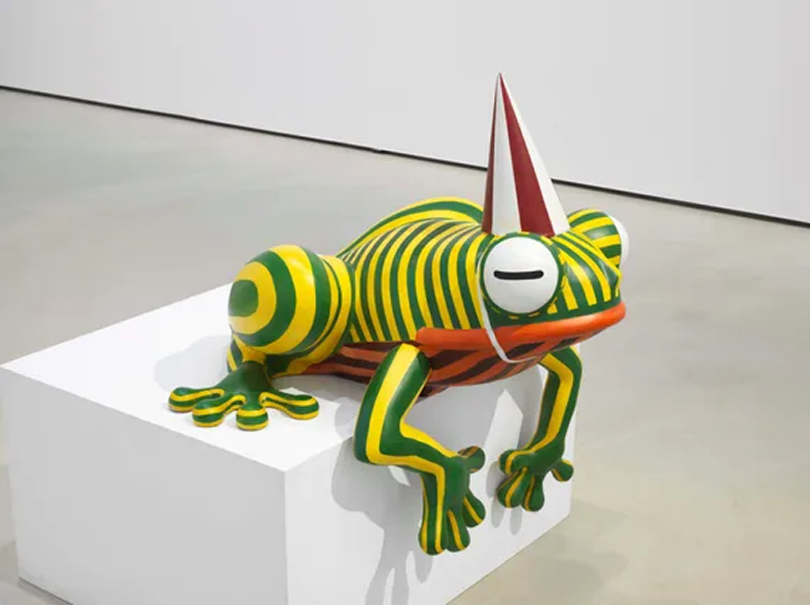
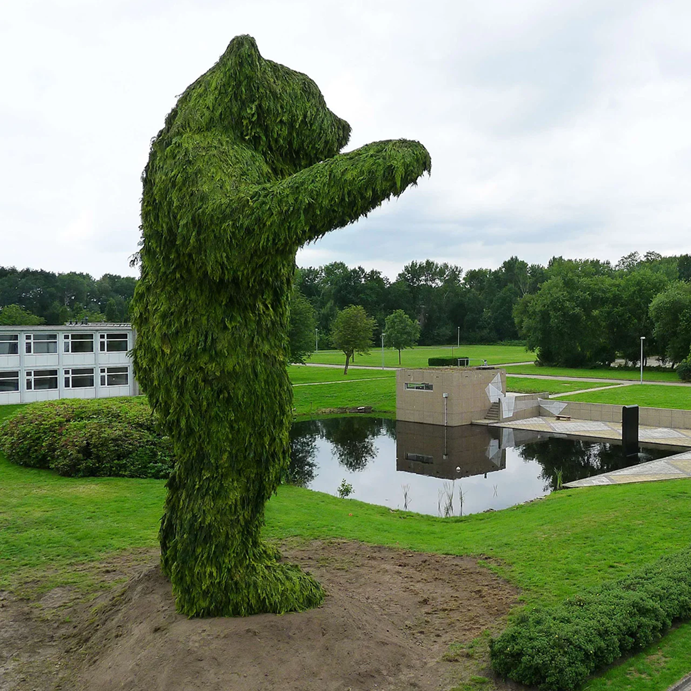
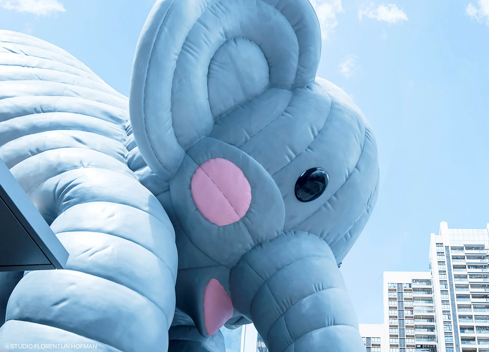
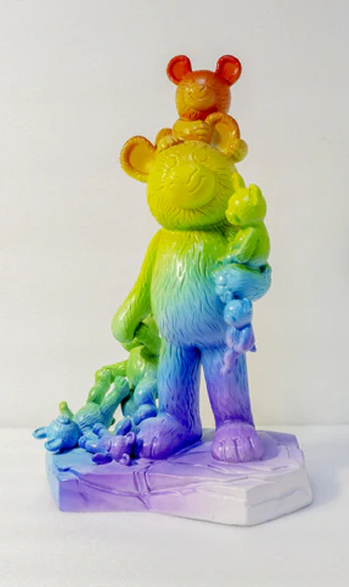

Florentijn Hofman, néerlandais, est un artiste contemporain reconnu pour ses œuvres colossales et ses installations publics. Ses créations, telles que le canard géant, sont souvent placées dans l'espace public pour provoquer ou attendrir les passants. Hofman a déjà exposé ses œuvres dans plusieurs villes, y compris Amsterdam, Sao Paulo, Hong Kong et Shanghai, avant de faire son apparition sur le lac Seokchon à Séoul. Ses œuvres continuent d'attirer l'attention et de susciter des réactions uniques dans la société contemporaine.
Né le
16 avr. 1977
Age
48 ans
Crée depuis
2003
Florentijn Hofman, né en 1977 aux Pays-Bas, est un artiste contemporain renommé pour ses sculptures monumentales et ludiques installées dans des espaces publics à travers le monde. Depuis 2003, il transforme des objets du quotidien ou des animaux familiers — comme son célèbre Canard en caoutchouc — en œuvres géantes aux dimensions démesurées, mêlant poésie, nostalgie et interaction sociale. Son style, souvent qualifié d’« art régressif », s’inspire de l’enfance et du jeu pour susciter l’émerveillement, tout en questionnant subtilement notre rapport à l’espace urbain et à la consommation. Ses créations, éphémères et itinérantes, ont été exposées à Amsterdam, Hong Kong, São Paulo, Séoul et bien d’autres villes, faisant de lui l’un des artistes publics les plus influents de son temps.






